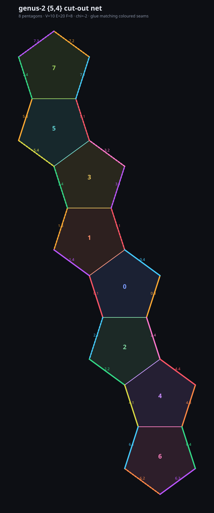

genus-2 {5,4} — cut-out net
8 pentagons · V=10 E=20 F=8 · chi=-2 · no boundary

a real net you could cut out and glue: the eight pentagons are laid flat edge-to-edge, and the coloured seams on the leftover boundary edges show where to join them to close the surface into genus 2 (the two-holed surface). matching colours glue together.
this is the smallest honest closed {5,4} world — every face has five neighbours, four
pentagons meet at every vertex, and there's no edge left open. same map the glider hunt ran on
(which came back a clean negative: every mover was a symmetry rotor or a breather, never a
traveller).